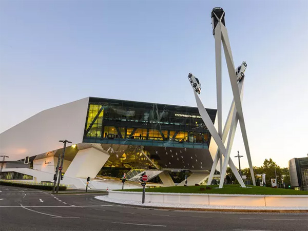
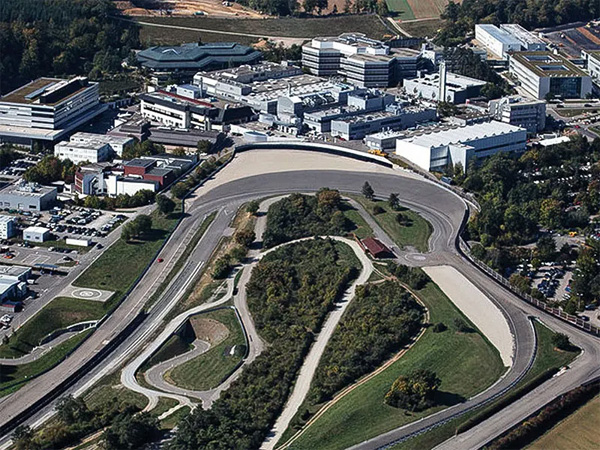
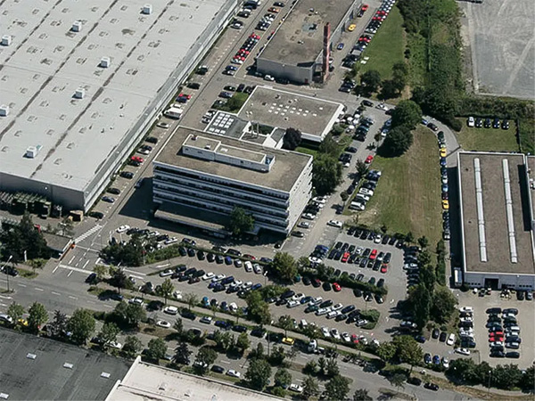
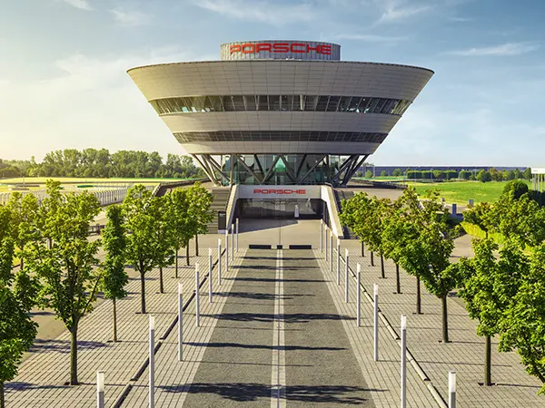

본문콘텐츠영역
ABOUT
STRATEGY

Shaping the future of the sportscar – this is the theme of Strategy 2025. At the heart of the strategy is our future product portfolio. The sportscar of the future will blend the history and values of the Porsche brand with innovative technologies, while at the same time ensuring sustainability. In achieving this, topics such as electromobility, digitalisation and connectivity will play an important role. Embracing these topics will allow us to shape the exclusive and sporty mobility of tomorrow. Nevertheless, with all the innovations and modifications in front of us, one thing remains constant: Anything that carries the Porsche crest will also feature the excellent quality that is synonymous with Porsche.
With this approach we are already on our way towards rethinking sporty mobility. We want to excite customers with our products and services. We are also aiming to consolidate our reputation as an excellent employer and business partner that fulfils its social and environmental responsibilities. And the return needs to be sufficient too.
LOCATION
-

- Zuffenhausen
- The heart of Porsche continues to beat in Zuffenhausen. This is where it all began.
-

- Weissach
- The Porsche Research & Development Centre has been located in Weissach since 1971.
-

- Ludwigsburg
- Ludwigsburg is still characterized by its international orientation.
-

- Leipzig
- Since 2002, Porschehas found its second home in Sachsen, a state famous for its automotive industry.